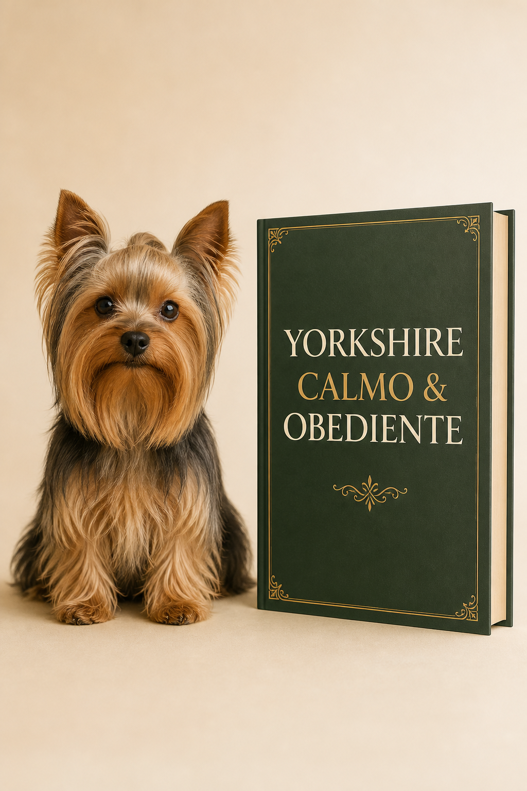

Guia Completo
88 páginas e 18 capítulosTreinamento organizado passo a passo.
Importante: sua compra ainda não terminou
Você acaba de dar um passo importante.
Adicione agora o Yorkshire Calmo e Obediente e tenha um plano prático com 88 páginas e 18 capítulos para ensinar os comportamentos essenciais ao seu Yorkshire em poucos minutos por dia.

✓ Pagamento único ✓ Acesso imediato ✓ Sem preencher seus dados novamente
A rotina que você quer viver
Prestando atenção quando você chama
Entendendo comandos básicos
Sabendo quando parar
Mais tranquilo dentro de casa
Respondendo melhor às suas orientações
Tornando passeios e a rotina mais simples
“
O próximo passo natural
Você já escolheu resolver um dos comportamentos que mais incomodam tutores de Yorkshire.
Agora existe um próximo passo: ensinar seu Yorkshire a prestar atenção, entender comandos e responder melhor às suas orientações.
O Yorkshire Calmo e Obediente organiza esse processo de forma simples para você saber o que ensinar, como ensinar e como avançar.
Treinamento especializado
Um treinamento prático de obediência para Yorkshire, com 88 páginas divididas em 18 capítulos.
O erro mais comum
Muitos tutores tentam ensinar vários comandos ao mesmo tempo, mudam a forma de treinamento constantemente e repetem ordens sem uma sequência clara.
O resultado é confusão para o cachorro e frustração para o tutor.
Tudo para acompanhar a evolução
Treinamento organizado passo a passo.
Material de consulta rápida para utilizar durante os treinamentos.
Acompanhe o que seu Yorkshire já aprendeu e quais pontos ainda precisam ser trabalhados.
Condição exclusiva pós-compra
Uma dúvida comum
Sim. E ele continua sendo sua solução específica para controlar os latidos.
O Yorkshire Calmo e Obediente tem outro objetivo: ensinar comandos, atenção, limites e obediência para melhorar toda a convivência.
Um produto não substitui o outro. Eles se complementam.
Seu produto atual
Seu próximo passo
Sua decisão
Você pode continuar apenas com sua compra atual. Ou aproveitar esta condição especial e começar também um treinamento completo de obediência.